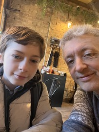
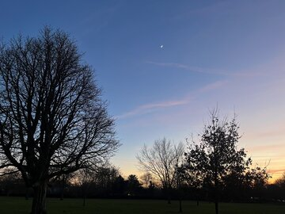
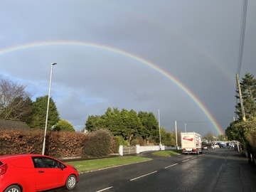
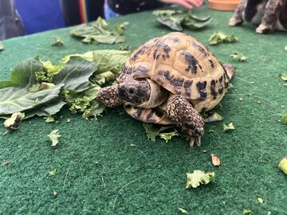
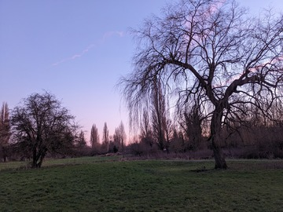
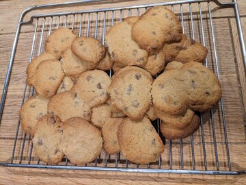

Writing
Stories, ideas,
and things I notice.
Personal essays and writing about climate, education, and public life.
Selected pieces are collected below. You can also read and subscribe on Substack.
My Father and the Chancellor’s Toilet
How an impossible request from a Treasury martinet sparked a legendary memo — and an early exit from the Civil Service.
Green Councillors Push for Rights to Protect the River Cam
Cllrs Eleanor Toye-Scott and Sarah Nicmanis bring a motion to Cambridge City Council to formally recognise Rights of the River Cam.
What’s your climate story?
And how does it affect what you do?
The Big Tests
A Levels: what are they for, and is it time to think about replacing them?
Getting busy doing nothing
Why we need to Stop and Go at the same time.
The mind-expanding world of trees
Thoughts and a review of the first two books of Peter Wohlleben’s tree science trilogy: The Hidden Life of Trees and How Trees Can Save the World.
Sadmin
Benjamin Franklin said the only certainties in life were “death and taxes”. Eleanor would like to add: “…and filling in forms.”
Carbon credits and the Courage to be Disliked
Why I’m starting a blog, some background on what I think about at work, and what I thought about a self-help book.
Photographs
A few pictures I’ve taken on my phone over the past few months, simply because I liked them.





